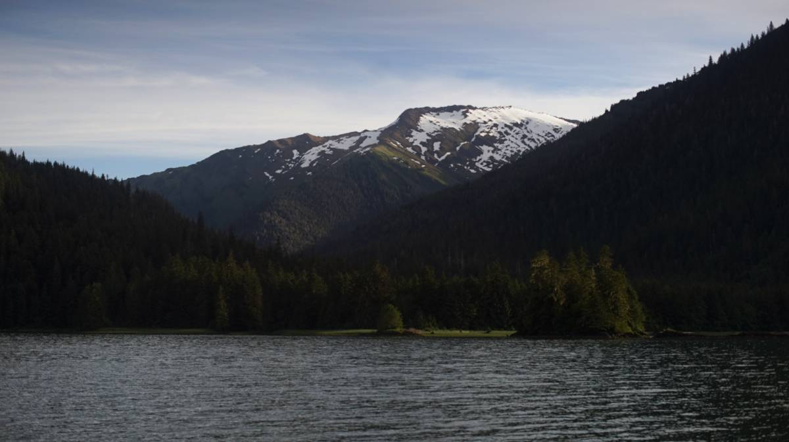

wrangell

On June 13th 2024, we left Berg Bay at 0530, bound for Wrangell. We got up early to catch the last of the flood tide to the narrows up Blake Channel. After the narrows, the current starts to ebb north, which makes it ideal for getting to Wrangell fast. Although, catching the meeting point of the two currents as both are at zero requires careful planning, we can't arrive too late, otherwise the last of the flood will start running against us. Everything went smooth, at 6h45, at the time of reversal, we were at the narrows- perfect timing!
Going to Wrangell by this route, rather than going through Zimovia Strait, adds 7 NM to the journey, but it's a very scenic route, with some worthwhile anchorages. The reason we chose to go through Blake Channel was because we were sick and tired of Clarence Strait, Stikine wasn't attractice either because it is where cruiseships go(and we're sick of those too), and Zimovia Strait anchorages don't look great.

Every turn you take when going through Blake Channel reveals a beautiful sight, especially once past Madan Bay. A beautiful snowy mountain range rose in the distance as we aimed towards Wrangell.
The water here still had a jade coloring to it, but when nearing the Stikine River, the coloring changed yet again. We saw the point where the two currents meet, the two colorations divided by a tide line.
We rounded the top of Wrangell Island, past the airport, and towards the city docks. A small cruiseship was idling near the cruiseship terminal, but wasn't moving. Shuttles were zooming from shore to ship. We went past its bow and over to Etolin Harbor. The Reliance guest float was full- for some reason a house was moored onto it? We thought it was a guest float. We moved past it and when to Heritage Harbor instead. This harbor has two transient docks, T1, and T2, it's first come first served. We found a spot on the west side of T2.
A customs officer showed up a bit after we arrived, maybe they were tracking us on AIS. Even with a cruising license, we are suppose to report our arrival whenever we moor into a big city(Wrangell is on the reporting list). We didn't have to report by phone, the office took note of our boat and that was it!
Heritage Harbor is a short walk away from the grocery store, hardware store and the harbourmaster's office. After lunch we walked over to check in with the marina, then we stopped at the grocery store to pick up a few fresh items. The IGA selection was not great, the vegetables appeared to have been frozen... the cucumbers were yellowing, the kale was soft and discolored too. We bought carrots, a few other items, but then decided to try the City Market instead. Unfortunately, a lot of items appear to be sent here frozen... even some bread we picked up off the shelf was half-thawed.
more soon...